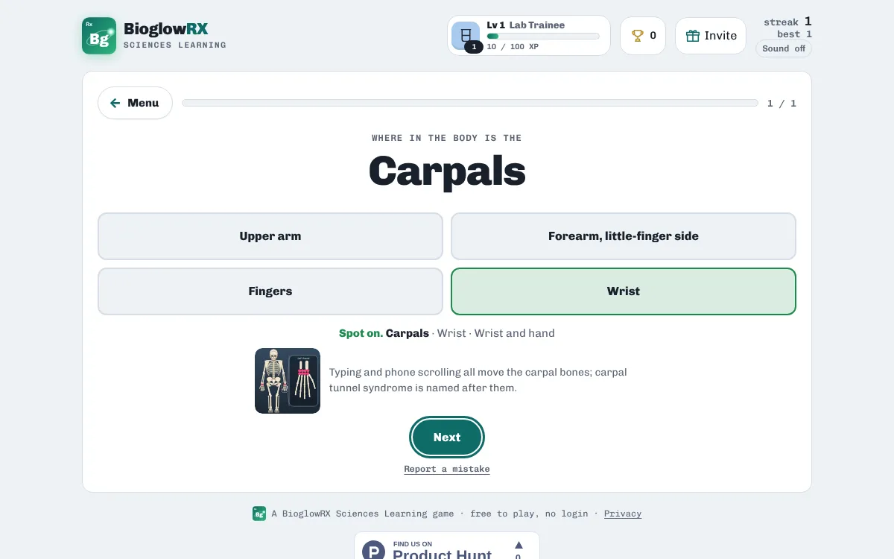

Anatomy & Physiology · free · no login
Bones of the skeleton quiz

The adult skeleton has about 206 bones. Bone Rush covers the 34 main bones and groups you need to name and place first: skull and face, spine, chest, shoulder and arm, wrist and hand, pelvis, leg, and ankle and foot.

After every answer you see the bone highlighted on a skeleton diagram, so you learn where it sits, not just its name.
A taste of what's inside
| Bone | Where it is |
|---|---|
| Frontal bone | Forehead |
| Parietal bones | Top and sides of the skull |
| Occipital bone | Back of the skull |
| Temporal bones | Sides of the head, around the ears |
| Mandible | Lower jaw |
| Maxilla | Upper jaw |
| Zygomatic bones | Cheekbones |
| Nasal bones | Bridge of the nose |
| Cervical vertebrae | Neck |
| Thoracic vertebrae | Upper and middle back |
| Lumbar vertebrae | Lower back |
| Sacrum | Base of the spine, between the hips |
Ways to practise
- Study notes · Read the key ideas first: everything the games ask is in here.
- Explore the skeleton · Tap any bone to learn where it is and what it does.
- Where is it? · See the bone, pick where it sits.
- Which bone? · See the place, name the bone.
- Match Pairs · Pair each bone with where it sits.
- Which region? · Sort each bone into its body region.
How to study with it
- Open Explore the skeleton and tap each region.
- Play Where is it? (see the bone, pick where it sits) and Which bone? (see the place, name the bone).
- Finish with Which region? and Match Pairs.
Questions
Does it cover every bone?
It covers the 34 main bones and groups students learn first; small bones are grouped, for example the carpals and tarsals.
Is it free?
Yes. Everything is free, with no ads and nothing to buy.
Do I need an account?
No. There is no login. Your scores, streaks and certificates are saved on your device.
Does it work on a phone?
Yes. It works in any modern browser on phones, tablets, Chromebooks and computers.
More free practice
 Anatomy & PhysiologyCranial nerves quizAll 12 nerves: number, name and jobPlay free
Anatomy & PhysiologyCranial nerves quizAll 12 nerves: number, name and jobPlay free  Anatomy & PhysiologyBlood flow through the heartChambers, valves and vessels in the right orderPlay free
Anatomy & PhysiologyBlood flow through the heartChambers, valves and vessels in the right orderPlay free  ChemistryPeriodic table gameNames, symbols, families and where each element sitsPlay free
ChemistryPeriodic table gameNames, symbols, families and where each element sitsPlay free BioglowRX Sciences Learning turns university science textbooks into free games, chapter by chapter: chemistry, anatomy & physiology, pharmacology, nutrition, and health & wellness. See all subjects.